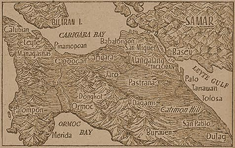

|
j
a v a s c r i p t |
December 10, 1944
The Tribune is a maze of claims, counter-claims and double-claims. "Nippon Land Forces Capture Two Enemy Airbases at Burauen" (December 6); "12 Warships, Transports Blasted"; "Enemy forces, about one division strong, launched landing operations in the vicinity of Albuera" (just south of Ormoc near Ipil, December 7).

Attrition in Rugged Leyte
Daihon-ei is contradictory: "U.S. Attempt to make New Landings Foiled" — American ships were attacked and later seen fleeing through the Surigao Strait. "At present, the Japanese Air Force is mopping up a LANDED enemy detachment." And if that isn't clear enough: "Heavy Fighting Rages at Albuera." Editorial: "Sweeping out the Invaders": Yamashita said, "I will crush the enemy," who he called the "second Magellan" of Leyte. Koiso said Japanese forces would "drive out the enemy from the Island to the sea." George phoned before noon. He didn't even have to speak; I could hear his Dad yelling, "Get that stupid radio out of the house — NOW!" I arrived in seven minutes and shortly after was on the other side of a deserted Santa Mesa Avenue with the radio securely strapped on its accustomed rack. The next step required a 150-meter uphill walk with the bike over the exposed Santa Mesa water pipeline to the corner of Manga Avenue, in full view of the Japanese sentry seated on my right across the street. Holding the bicycle on my left, the first 75 meters went without incident. Suddenly, a loud imperial whistle made me jump out of my skin. I didn't stop to see if it was meant for me though there was nobody else around. I kept walking ... the corner was almost at hand. The second whistle came too late to prevent me rounding into Manga Avenue. Less than three minutes later I was home. This time it took quite a few minutes for me to calm my nerves. |
|
|
|
|